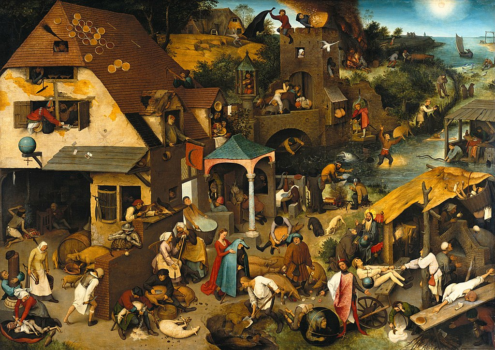

<head>
<meta charset="UTF-8" />
<meta name="keywords" content="drawing, painting" />
<meta name="description" content="drawings by Sunjy" />
<title>Sunjy</title>
<link rel="shortcut icon" type="image/x-icon" href="../../mImages/mCommon/favicon.ico" media="screen" />
<link rel="stylesheet" type="text/css" href="../../mCsses/mCommon/mCssA.css" />
<link rel="stylesheet" type="text/css" href="../../mCsses/mCommon/mCssB.css" />
<link rel="stylesheet" type="text/css" href="../../mCsses/mCommon/mCssC.css" />
<link rel="stylesheet" type="text/css" href="../../mCsses/mCommon/mCssD.css" />
<link rel="stylesheet" type="text/css" href="../../mCsses/mContent/mCssA.css" />
<link rel="stylesheet" type="text/css" href="../../mCsses/mContent/mCssB.css" />
<link rel="stylesheet" type="text/css" href="../../mCsses/mContent/mCssC.css" />
<link rel="stylesheet" type="text/css" href="../../mCsses/mContent/mCssD.css" />
</head>
<script type="text/javascript" src="../../mScripts/mContent/mContentAA.js" /></script>
<script type="text/javascript" src="../../mScripts/mContent/mContentAB.js" /></script>
<script type="text/javascript" src="../../mScripts/mContent/mContentAC.js" /></script>
<script type="text/javascript" src="../../mScripts/mContent/mContentAD.js" /></script>
<script type="text/javascript"></script> 
<script type="text/javascript">
document.write('<div class="mImgAbsolute"></div>');
/*
document.write('<p class="mFontSizeBColor" />From a white paper...</p>');
document.write('<table class="center"><tr><td>');
document.write('');
document.write('</td></tr></table>');
*/
</script>


<script type="text/javascript">
document.write('<p class="mFontSizeBColor" />Dutch Proverbs</p>');
document.write('<p class="mFontSizeSColor" />“Netherlandish Proverbs” by Pieter Bruegel, the Elder is also called Dutch Proverbs. It depicts a scene in which humans and, to a lesser extent, animals and objects, offer illustrated examples of Dutch proverbs and idioms. This painting is consistent with the common themes in Bruegel’s paintings on the absurdity, wickedness, and foolishness of humans. This painting is a catalog of human folly, and the people depicted show the characteristic blank features that Bruegel used to portray fools.<br><br>Proverbs were very popular in Bruegel’s time. A hundred years before Bruegel’s painting, illustrations of proverbs had been first used in the Flemish “Books of Hours.” The book of hours was a Christian devotional book that was popular in the Middle Ages.<br><br>There are approximately 112 identifiable proverbs and idioms in the scene. Bruegel may have included more, which are not obvious and cannot be determined because of the language and cultural change over the nearly 500 years since this painting. Some of are still in widespread use, and in current use such as:<br>•“Swimming against the tide.”<br>•“Banging one’s head against a brick wall.”<br>•“Armed to the teeth.”<br><br>Many more proverbs and idioms have faded from use, which makes the understanding of each of the stories in this painting harder.<br><br>This painting is exhibited in the Gemäldegalerie, Berlin. However, the artist’s son, Pieter Brueghel, the Younger, specialized in making copies of his father’s work and he painted at least 16 copies of this original painting, which can be found in other art museums. Not all versions of the painting, by father or son, show the same proverbs and they also differ in other minor details.<br><br>Proverbs and Idioms featured in the painting: “Netherlandish Proverbs.”<br><br>Below is a small selection of Proverbs and idioms with their meaning:<br>•“To be a pillar-biter.” – To be a religious hypocrite<br>•“Never believe someone who carries fire in one hand and water in the other.” – To be two-faced and to stir up trouble<br>•“One foot shod, the other bare.” – Balance is paramount<br>•“To put your armor on.” – To be angry<br>•“Shear them but do not skin them.” – Do not press your advantage too far<br>•“What can smoke do to iron?” – There is no point in trying to change the unchangeable<br>•“It depends on the fall of the cards.” – It is up to chance<br>•“To lead each other by the nose.” – To fool each other<br>•“The die is cast.” – The decision is made<br>•“Fools get the best cards.” – Luck can overcome intelligence<br>•“To look through one’s fingers.” – To turn a blind eye<br>•“Two fools under one hood.” – Stupidity loves company<br>•“Who knows why geese go barefoot?” – There is a reason for everything, though it may not be obvious<br>•“To blow in the ear.” – To spread gossip<br></p>');
document.write('<table class="center" /><tr><td>');
document.write('<br>Proverbs were very popular in Bruegel’s time. A hundred years before Bruegel’s painting, illustrations of proverbs had been first used in the Flemish “Books of Hours.” The book of hours was a Christian devotional book that was popular in the Middle Ages.<br><br>There are approximately 112 identifiable proverbs and idioms in the scene. Bruegel may have included more, which are not obvious and cannot be determined because of the language and cultural change over the nearly 500 years since this painting. Some of are still in widespread use, and in current use such as:<br>•“Swimming against the tide.”<br>•“Banging one’s head against a brick wall.”<br>•“Armed to the teeth.”<br><br>Many more proverbs and idioms have faded from use, which makes the understanding of each of the stories in this painting harder.<br><br>This painting is exhibited in the Gemäldegalerie, Berlin. However, the artist’s son, Pieter Brueghel, the Younger, specialized in making copies of his father’s work and he painted at least 16 copies of this original painting, which can be found in other art museums. Not all versions of the painting, by father or son, show the same proverbs and they also differ in other minor details.<br><br>Proverbs and Idioms featured in the painting: “Netherlandish Proverbs.”<br><br>Below is a small selection of Proverbs and idioms with their meaning:<br>•“To be a pillar-biter.” – To be a religious hypocrite<br>•“Never believe someone who carries fire in one hand and water in the other.” – To be two-faced and to stir up trouble<br>•“One foot shod, the other bare.” – Balance is paramount<br>•“To put your armor on.” – To be angry<br>•“Shear them but do not skin them.” – Do not press your advantage too far<br>•“What can smoke do to iron?” – There is no point in trying to change the unchangeable<br>•“It depends on the fall of the cards.” – It is up to chance<br>•“To lead each other by the nose.” – To fool each other<br>•“The die is cast.” – The decision is made<br>•“Fools get the best cards.” – Luck can overcome intelligence<br>•“To look through one’s fingers.” – To turn a blind eye<br>•“Two fools under one hood.” – Stupidity loves company<br>•“Who knows why geese go barefoot?” – There is a reason for everything, though it may not be obvious<br>•“To blow in the ear.” – To spread gossip<br>" />');
document.write('</td></tr></table>');
</script>


